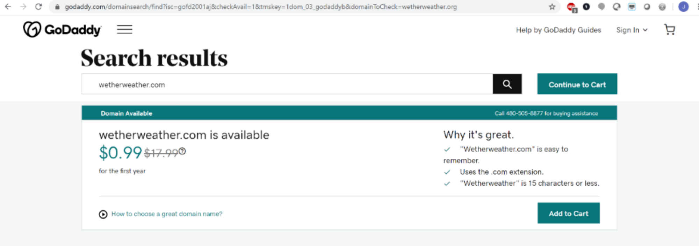

Site name:
Wether weatherSite purpose:
Weather forcast and alerts for the rancher, farmer, and hobbyist. This site is setup to help users know what weather is coming and what to expect as they move animals around or as they tend their flocks. Upcoming weather alerts can help them know whether to put animals out to pasture or if they would be better left near shelter.Available domain name:
wetherweather.org
Simple logo: